第1回：ガイダンス・1変数の復習・多変数関数
この授業で何を学ぶのか
多変数関数の微分積分 を学ぶ。
例
- \(z = x^2 + \cos(x + y)\) の最大値を求める
- 制約条件\(x^2 + y^2 = 1\) のもとで、\(f(x, y) = x^3 - 3xy^2 + y^3\) の最大・最小値を求める
- \(z = x^2 + y^2\) を \(x^2 + y^2 \leq 1\) の範囲で積分する
この授業の方針
この授業では数学的厳密性にはこだわらず、証明を最低限にする。そのかわりに直感的理解を優先する。
特にデータサイエンスでは 最小値を求める ことが重要である。
回帰の例
データ \((x_1, y_1), \ldots, (x_n, y_n)\) から 回帰直線
を求める。
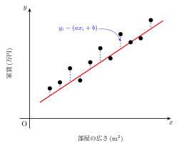
誤差関数
を 最小 にする \((a, b)\) を探す → 2変数関数の最小値問題
データが \((x_i, y_i, z_i)\), \(i = 1, \ldots, n\) ならば
→ 3変数関数 の最小値問題
この授業では 多変数関数の最小値問題 を扱えるようになる。
ニューラルネットワークの例
人間の神経細胞を模倣した機械学習手法。
パラメータ \(a\), \(b\) の数が膨大（ChatGPT-4 が 8,000億〜1兆個と言われている）。
データサイエンス以外の例
時間 \(t\) と空間 \((x, y, z)\) の関数となる 「場」：
- 温度場、流れ場、電場、……
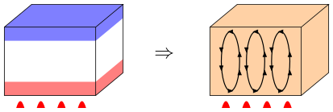
応用分野：流体力学 → 気象、自動車・航空関連、電磁気学 → 通信
1変数の微分積分の復習
関数の極限
- \(\displaystyle\lim_{x \to a} f(x) = A\)（極限値が存在する場合）
例 \(\displaystyle\lim_{x \to 2} (x^2 + 1) = 5\)
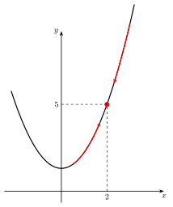
- \(\displaystyle\lim_{x \to a} f(x) = +\infty\)
例 \(\displaystyle\lim_{x \to 0} \frac{1}{x^2} = \infty\)
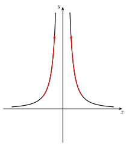
-
\(\displaystyle\lim_{x \to a} f(x) = -\infty\)
-
片側極限：左右で極限値が異なる場合
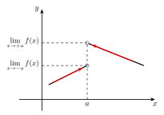
- \(\displaystyle\lim_{x \to a} f(x) = f(a)\) のとき、\(f(x)\) は \(x = a\) で 連続 である。
関数の微分
- 次の極限が存在するとき、\(f(x)\) は \(x = a\) で 微分可能 である：
この極限値を 微分係数 といい、\(f'(a)\), \(\dfrac{\mathrm{d}f}{\mathrm{d}x}(a)\), \(\left.\dfrac{\mathrm{d}f}{\mathrm{d}x}\right|_{x=a}\) などと書く。
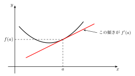
関数の極値
\(f(x)\) が \(x = a\) で極値をもつ ⇒ \(f'(a) = 0\)
注意
\(f'(a) = 0\) ⇒ 極値 とは限らない
例 \(f(x) = x^3\) のとき \(f'(x) = 3x^2\) であり \(f'(0) = 0\) だが、\(x = 0\) は極値ではない。
テイラー展開
ここで \(R_n\) は 剰余項 である。\(R_n \to 0\) であるとしてテイラー展開であるという。
-
\(a = 0\) の場合を マクローリン展開 という。
-
\(|x| \ll 1\) とする：
狭い範囲では直線と見なして良い。
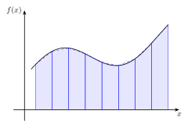
Note
積分の復習は後の回で行う。
関数の定義
1変数の場合
\(y = f(x)\) とは、\(x\) の各値に対して \(y\) の値を対応づける 規則 のこと。
例 \(y = f(x) = 2x^2\) のとき、\(x = 1 \to y = 2\), \(x = 2 \to y = 8\)
- \(x\) の取りうる範囲を 定義域
- \(y\) のとる範囲を 値域
という。
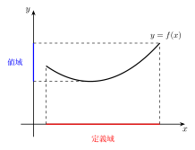
定義域に含まれないのは
- 分母が 0 になる点
- ルートの中が負になる点
- 対数の中が 0 又は負になる点
\(x\) を定義域の範囲内で動かすと \((x, y)\) の軌跡を グラフ という。
例 \(f(x) = \sqrt{1 - x^2}\)
2変数の場合
\(z = f(x, y)\) とは、\((x, y)\) の各組に対して \(z\) の値を対応づける 規則 である。
例 \(z = f(x, y) = x^2 + 2y\)
\((x, y) = (1, 1) \Rightarrow z = 3\)、\((x, y) = (2, 3) \Rightarrow z = 10\)
- \((x, y)\) の取りうる範囲（= 2次元の領域）を 定義域
- \(z\) のとる範囲を 値域
という。
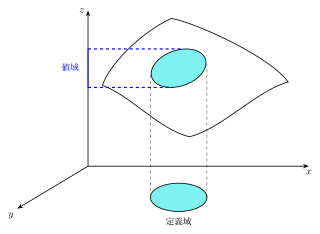
例題
例題 1（p.175）
\(z = \sqrt{4 - x^2 - y^2}\) の定義域と値域を求めよ。
解
\(4 - x^2 - y^2 \geq 0\) より \(x^2 + y^2 \leq 4\)
- 定義域：\(x^2 + y^2 \leq 4\)（半径2の円盤）
- 値域：\(0 \leq z \leq 2\)
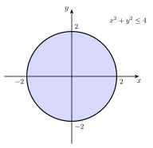
例題 2
\(z = xy\) の定義域と値域を求めよ。
解
- 定義域：\(xy\) 平面全体
- 値域：実数全体
例題 3
\(\displaystyle z = \frac{1}{x^2 + y^2}\) の定義域と値域を求めよ。
解
- 定義域：原点軸を除く、すなわち \((x, y) \neq (0, 0)\)
- 値域：\(z > 0\)
例題 4
\(z = \ln(1 + xy)\) の定義域と値域を求めよ。
解
\(1 + xy > 0\) より \(xy > -1\)
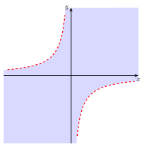
ベクトル関数とベクトル場
1変数2次元ベクトル関数
\(\displaystyle\binom{x}{y} = \binom{f(t)}{g(t)}\) とは、\(t\) の各値に対して \(x\) と \(y\) の値を対応づける規則。 $$ \mathbf{u} = \binom{f}{g} \colon t \to \binom{x}{y} $$
ベクトルの表記
ベクトルの表記にはいくつかの流儀がある。 本講義では太文字 \(\mathbf{u}\) を用いるが、上矢印 \(\vec{u}\) や下線 \(\underline{u}\) で表す場合もある。
例 \(\displaystyle\mathbf{u}(t) = \binom{f(t)}{g(t)} = \binom{t}{t^2}\)
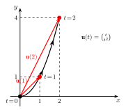
2変数2次元ベクトル関数（ベクトル場）
⑩ \(\displaystyle\mathbf{u}(x, y) = \binom{f(x, y)}{g(x, y)}\)
例 \(\displaystyle\mathbf{u}(x, y) = \binom{y}{-x}\)
ある点 \((x, y)\) における風速ベクトルのように、各点にベクトルが対応する。
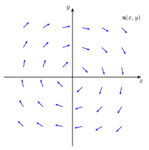
演習問題
演習 1
\(\displaystyle f(x, y) = \frac{x + y}{x - y}\) の定義域を求めよ。
解答
\(x - y \neq 0\) より
直線 \(x = y\) を除いた領域。
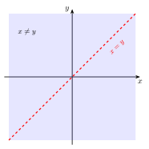
演習 2
\(f(x, y) = \sqrt{xy}\) の定義域を求めよ。
解答
\(xy \geq 0\) より
第1象限と第3象限（座標軸を含む）。
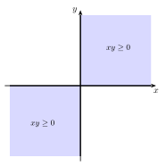
演習 3
\(f(x, y) = \sqrt{4x^2 + 9y^2 - 36}\) の定義域を求めよ。
解答
\(4x^2 + 9y^2 - 36 \geq 0\) より
楕円 \(\dfrac{x^2}{9} + \dfrac{y^2}{4} = 1\) の外側（境界を含む）。
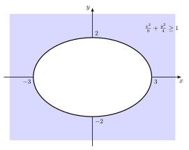
演習 4
\(\displaystyle f(x, y) = \ln\!\left(\frac{y}{x^2 - 1}\right)\) の定義域を求めよ。
解答
\(\dfrac{y}{x^2 - 1} > 0\) が必要。
すなわち
かつ \(y \neq 0\)。
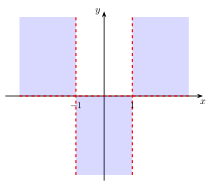